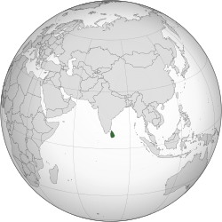
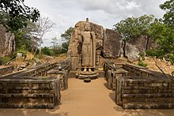
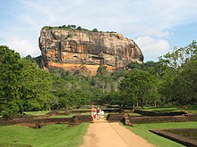
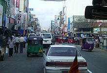

|
|
|
|
A Hymn for Ceylon |
609耶和华神会应许
1.耶和华神会应许,全地翘望等待;
从星罗棋布岛屿,遍大地及洋海; 我们分属守望者,当勤工不停足, 因这是你的命令,直到全地蒙福. 因这是你的命令,直到全地蒙福. 2.求全能父赐他们所需各样厚恩; 从如茵青翠村庄,到达绿荫海滨; 从巍然耸立高山,遍及辽阔平原, 但愿属你的子民,得进公义之巅. 但愿属你的子民,得进公义之巅. 3.边境接壤存和平,万国和睦敦邻. 真诚相爱无猜忌,友爱纯洁守信; 忠诚甘卑贱服务,守卫相互信赖, 彼此切磋互学习,直到基督再来. 彼此切磋互学习,直到基督再来. 4.全地当听主声音,万民向主伏拜; 全权统治落主肩,罪在主足下埋; 我众凭信齐歌颂,贺主成就辉煌! 同来走永生大道,得见天上君王. 同来走永生大道,得见天上君王. |
|
https://www.mred365.cn/szxg/7612.html
|
|
|
|
|

Jehovah, Thou hast promised /A Hymn for Sri Lanka sung By Lasla Fernando https://youtu.be/1wmj-nw00BM composed by- Reverend Walter Stanley Senior (10 May 1876 – 23 February 1938)
| Text: | Jehovah, Thou Hast Promised |
| Author: | W. S. Senior |
| Tune: | [Jehovah, Thou hast promised] |
| Arranger: | Surya Sena |
| Composer (melody): | John de Silva |
Tune Information
| Title: | [Jehovah, Thou hast promised] |
| Composer (melody): | John de Silva |
| Arranger: | Surya Sena (1950) |
| Incipit: | 51232 44332 132 |
| Key: | F Major |
| Source: | Ceylon |
| Short Name: | John de Silva |
| Full Name: | de Silva, John |

| Short Name: | Devar Surya Sena |
| Full Name: | Sena, Devar Surya, 1899- |
| Birth Year: | 1899 |
| Death Year (est.): | 1999 |
"Devar Surya Sena was born Herbert Charles Jacob Pieris, the son of Sir James Pieris, member of the then Legislative Assembly. His mother was one of the12 children from the family of Jacob de Mel. In his autobiography 'Of Sri Lanka I Sing", he recounts his connection to the de Fonseka families of Kalutara.[...]" --Devar Surya Sena at deFonseka.com
斯里蘭卡Sri Lanka
|
斯里蘭卡民主社會主義共和國
ශ්රී
ලංකා ප්රජාතාන්ත්රික සමාජවාදී ජනරජය（僧加羅語）
இலங்கை சனநாயக சோஷலிசக் குடியரசு（坦米爾文） Democratic Socialist Republic of Sri Lanka（英語） |
|
|---|---|
|
國徽
|
|
|
 |
|
| 首都 |
斯里賈亞瓦德納普拉科特（行政首都） 可倫坡（經濟首都） |
| 最大城市 | 可倫坡 |
| 官方語言 |
|
| 官方文字 |
|
| 族群 |
|
| 政治體制 |
單一制 半總統制共和國 |
| 政府 | 斯里蘭卡議會 |
|
• 總統
|
戈塔巴雅·拉賈帕克薩 |
|
• 總理
|
馬欣達·拉賈帕克薩 |
| 現役軍人 | 157,000（第33名） |
| 成立 | |
| 1948年2月4日 | |
|
• 正式成立
|
1972年5月22日 |
| 面積 | |
|
• 總計
|
65,610平方公里（第123名） |
|
• 水域率
|
1.3% |
| 人口 | |
|
• 2019年估計
|
21,089,000（第58名） |
|
• 密度
|
305/平方公里（第24名） |
| GDP（PPP） | 2020年估計 |
|
• 總計
|
3,218.56億美元[1]（第58名） |
|
• 人均
|
14,509美元[1]（第91名） |
| GDP（國際匯率） | 2020年估計 |
|
• 總計
|
921.11億美元[1]（第65名） |
|
• 人均
|
4,152美元[1]（第109名） |
| 貨幣 | 斯里蘭卡盧比 |
| 時區 | UTC+5:30 |
|
• 曆法
|
公曆 |
| 行駛方位 | 靠左行駛 |
| 電話區號 | +94 |
| ISO 3166碼 | LKA |
| 主要節日 |
坦米爾元旦：1月15日 國慶日：2月4日 僧伽羅和坦米爾新年：4月13和14日 佛教月圓日、伊斯蘭宰牲節和基督教聖誕節等節日 |
| 家用電源電壓 | 230 V |
| 家用插座標準 | D、M、G |
| 人類發展指數 | ▲0.780[2]（第71名）－高 |
| 國家象徵 |
|
| 網際網路頂級域 | |

{kind=link}
{kind=link}
.svg){kind=link}
斯里蘭卡民主社會主義共和國（僧伽羅語：ශ්රී ලංකා ප්රජාතාන්ත්රික සමාජවාදී ජනරජය；坦米爾語：இலங்கை சனநாயக சோஷலிசக் குடியரசு；英語：Democratic Socialist Republic of Sri Lanka），通稱斯里蘭卡（僧伽羅語：ශ්රී ලංකාව；坦米爾語：இலங்கை；英語：Sri Lanka），1972年之前稱錫蘭，是一個位於南亞－印度次大陸東南方外海的島國，屬於亞洲。中國古代曾經稱之為已程不、獅子國、師子國、僧伽羅、楞伽島。
斯里蘭卡是單一制共和國，其政治首都位於斯里賈亞瓦德納普拉科特（簡稱「科特」），而經濟首都位於可倫坡。
名稱[編輯]
- 斯里蘭卡梵語古名Simhalauipa，意為「馴獅人」，《漢書·地理志》稱「已程不國」[註 1]。《梁書》稱「獅子國」。《大唐西域記》作「僧伽羅」，即梵語古名Simhalauipa的音譯。在中文�堙A至今稱斯里蘭卡的主要民族為「僧伽羅人」，其語言稱「僧伽羅語」。
- 斯里蘭卡古阿拉伯語Sirandib，宋代音譯為「細蘭」，明代稱「錫蘭」。
- 在佛教典籍中，斯里蘭卡古稱「赤銅鍱」。古代傳播到斯里蘭卡的佛教派別以地名命名，被稱為「赤銅鍱部」。這個部派是現代南傳上座部佛教的始祖。
- 1815年起作爲皇家殖民地由英國統治，正式名稱為「Ceylon」，漢譯「錫蘭」。此英語名稱來自葡萄牙語的「Ceilão」。1948年錫蘭獨立成爲「錫蘭自治領」。
- 1972年錫蘭廢除君主制，改稱「斯里蘭卡共和國」。「斯里蘭卡」名稱來自僧伽羅語ශ්රී ලංකා （śrī laṃkā），讀音/ʃɾiːˈlaŋkaː/。在斯里蘭卡的另一官方語言坦米爾語中則稱爲இலங்கை（ilaṅkai），讀音/iˈlaŋɡai/。「斯里蘭卡」在僧伽羅語裡義爲「美好神聖的土地」，其中的「蘭卡」實際上就是佛經中的「楞伽」，《楞伽經》即講述佛陀到達楞伽島教化說法，故以地名爲經名。
- 由於歷史原因，斯里蘭卡的衆多機構以及產品都仍以「錫蘭」為名。2011年斯里蘭卡政府宣佈將在所有政府可以控制的機構名稱中將「錫蘭」改爲「斯里蘭卡」。[3]
歷史[編輯]
古典、中世史[編輯]
公元前5世紀，僧伽羅人從印度遷移到斯里蘭卡。
公元前247年，印度孔雀王朝的阿育王派其子來島，從此僧伽羅人擯棄婆羅門教而改信佛教。
公元前2世紀前後，南印度的坦米爾人開始遷入斯里蘭卡。
311年左右，佛牙從印度傳入斯里蘭卡。
從公元5世紀直至16世紀，僧伽羅王國和坦米爾王國間征戰不斷，直至1521年葡萄牙船隊在可倫坡附近登陸。
殖民時期[編輯]
1796年2月15日，英軍占領可倫坡，荷蘭人統治時期結束。
1802年英法兩國簽訂了亞眠條約，斯里蘭卡被正式宣布為英國的殖民地。
近現代[編輯]
1948年2月4日，斯里蘭卡正式宣布從英國獨立，成為大英國協的自治領，定國名為錫蘭。
1972年5月22日，改國名為斯里蘭卡共和國。
1978年8月16日，新憲法頒布，改國名為斯里蘭卡民主社會主義共和國。
斯里蘭卡內戰[編輯]
1983年，由坦米爾人組成的猛虎組織以獨立建國為訴求，在普拉巴卡蘭的領導下襲擊政府軍，斯里蘭卡內戰爆發，戰事與恐攻甚至一度波及到可倫坡。印度出兵協助斯里蘭卡政府清剿猛虎組織，並迫使其簽訂停火協議。然而自1990年印軍撤離後，猛虎組織重新反攻，並迅速控制斯國北部廣大地區，在賈夫納半島建立起「坦米爾政權」，此後雙方衝突造成6萬餘人喪生。
自2000年起，在挪威等國斡旋下，猛虎組織與斯里蘭卡政府開始和談，在2002年2月，雙方在斯德哥爾摩簽署了一份永久性的停火協議，兩方代表亦前往泰國的梭桃邑海軍基地進行和談。然而雙方在此後六年先後進行了8輪直接談判，仍未取得共識，最終該停火協議名存實亡。
2006年7月開始，斯里蘭卡政府軍開始向猛虎組織控制區發動大規模軍事進攻，在兩年多的時間裡收復了約1.5萬平方公里的猛虎組織控制區。2009年1月，猛虎組織的大本營基利諾奇被攻下。5月猛虎組織承認戰爭失敗，普拉巴卡蘭被擊斃，斯里蘭卡內戰結束。
地理[編輯]
{kind=link}
{kind=link}
{kind=link}
斯里蘭卡島是梨形，又與眼淚的形狀相似，因此有「印度洋之淚」的雅稱。整個島嶼位於印度洋之中，東北邊是孟加拉灣；中部、南部是高原，多山地，北部和沿海是平原；有亞當峰。
斯里蘭卡北部屬熱帶草原氣候，南部屬熱帶雨林氣候，全年炎熱；西部年降雨量2000－3000毫米，東北部較乾燥，年降雨量約1000毫米。
政治[編輯]
斯里蘭卡的總統是國家元首。2015年4月28日通過的斯里蘭卡憲法第十九修正案大幅限制了總統的權力，規定總統任期5年，最多可任兩屆。[4][5]總統僅可在一屆議會運行四年半之後有權解散議會，但解散議會需要獲得議會三分之二議員支持。[6]
斯里蘭卡的一院制議會有225人，普選，任期6年。
獨立之後的斯里蘭卡仍然是大英國協成員。

{kind=link}

{kind=link}

_Mahinda_Rajapaksa_Theatre.JPG)

{kind=link}
{kind=link}